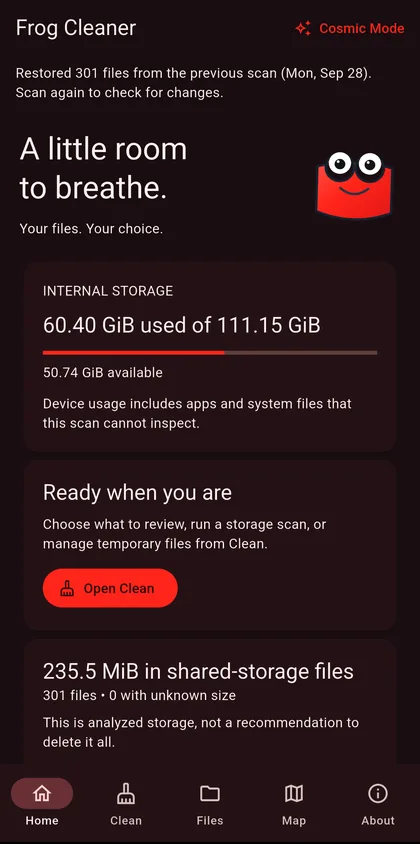
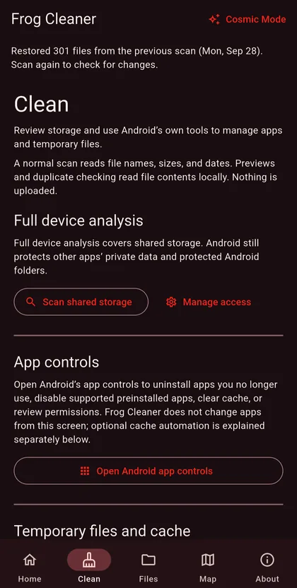
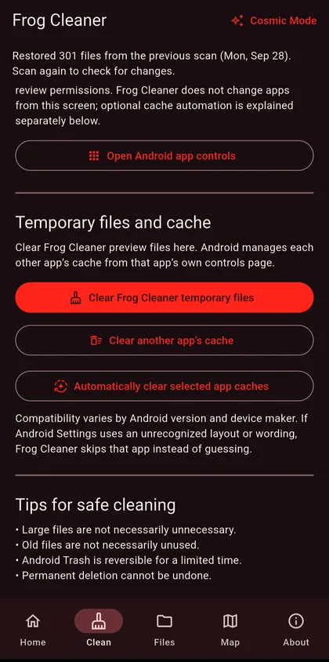
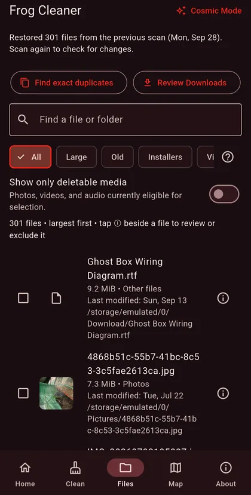
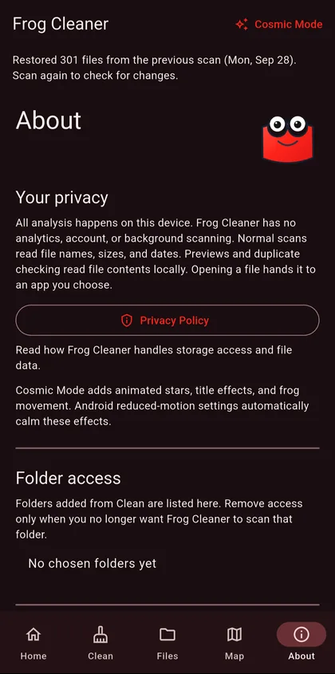
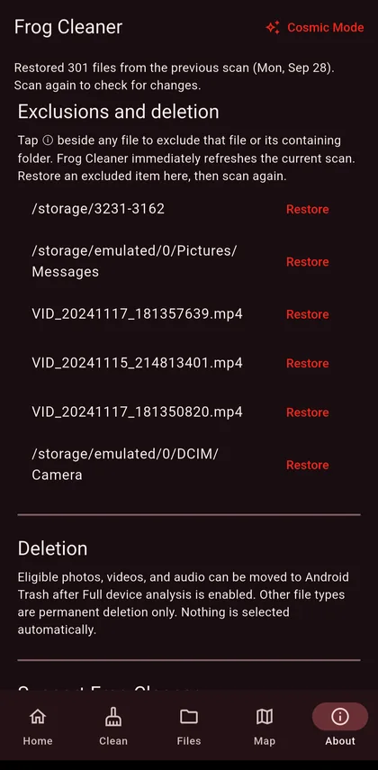

Android · APK download listed
Frog Cleaner
A transparent, user-controlled storage review tool that helps you understand large and aging files before deciding what to remove.
View APK download & installation ↓ Privacy & permissions ↓Review first. Decide second.
- Clear storage analysisReview selected folders for large or older files and understand where storage is being used.
- User-selected accessChoose a folder through Android’s system picker, with broader device analysis available only as an explicit option.
- No automatic deletionFrog Cleaner is designed to present findings clearly and keep cleanup decisions in your hands.
- Plain-language boundariesThe app explains what it can inspect, what Android restricts, and why any special access may be requested.
Why this one? It shows its findings before asking you to delete anything, and explains Android's limits.
A look inside Frog Cleaner
Explore your storage, review files, and decide what stays. No surprises, and nothing removed without your say-so.






Direct Android download
Get Frog Cleaner
Free, always. No ads, subscriptions, or paid unlocks.
Only public releases published by Frogdadday appear here.
Published APK record · v1.0.1 · October 22, 2026
What this build offers: Review storage, inspect files and decide what to clean. This is a feature summary, not a claim about what changed since the previous version.
- APK SHA-256
908c12b8a807da6fe901c33e0cb932be3455293675f05be9757ec2e6869187a0- Signing-certificate SHA-256 fingerprint
BC:C0:4B:C2:E3:DB:29:23:21:AA:8A:19:FA:49:52:79:C5:34:1E:F4:E8:02:C6:7C:B0:B7:9D:3E:5B:96:FA:3E
These identifiers were extracted from the public APK and its hash checked against GitHub's published digest on October 26, 2026. A matching checksum helps detect file changes, but is not a malware audit, independent security review or cryptographic signature-validation report. The certificate for a newer version may differ.
Browse official Frogdadday GitHub Releases ↗ if the live download check does not load.
Installing an APK on Android
- Use the download button above when a public APK is available, or open the official Releases page linked above.
- Open the file. Android may ask permission to install apps from your browser or file manager.
- Review system warnings; proceed only when you trust the source. Turn off the extra installation permission afterward.
Website APKs do not receive Google Play automatic updates. Updating an installed app requires a compatible Android package and signing certificate.
This page checks whether a public APK exists; it does not independently verify the file's safety or signing certificate.
Privacy and control
Analysis happens on the device. Frog Cleaner does not sell personal information, run ads, require an account, or use access for unrelated purposes. A public APK is listed above, but device and Android-version behavior can differ, and broad release validation is still ongoing. Review every deletion carefully.
Privacy & permissions
The policy details selected-folder access, optional all-files access and accessibility-assisted cache cleaning, and what scan information stays locally.
Read the full privacy policy